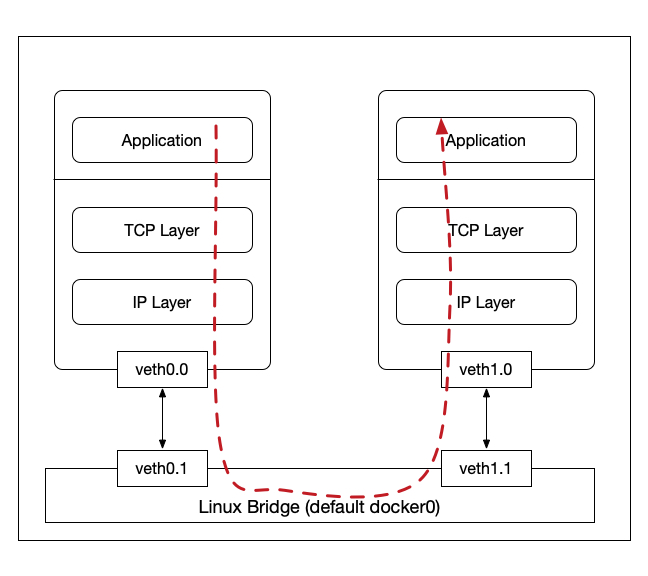

Tour Around Kernel Stack
In this blog post, I will share my shallow understanding of Linux Kernel Networking Stack by touring a simple network topology which consists of two containers connected to a linux bridge using veth as shown below.

Our discussion here is mainly based on the linux kernel 4.14.4 source code and we will talk about both the sending and receiving path beginning with the write() and read() systemcall. Also, we will discuss some details of the veth and bridge drivers.
Note that kernel is a fairly complex, and the networking subsystem also interacts with other subsystems (e.g., softirq subsystem, and etc.). So here, we do not delve into those details and neither the details of specific data structs. We focus more on the path.
Walking Path
Usually, userspace applications use systemcall (e.g., write(), read(), and etc.) to interact with the kernel stack. We talk about the sending path first.
Sending Path
1 | write() // [fs/read_write.c] |
- select transmitting hardware queue, if supported
- if no queue (loopback, tunnel, etc.), dev_hard_start_xmit()
- otherwise, entering some queuing discipline
1 | |-> xmit_one() dev_queue_xmit_nit() // NOTE: skb_clone() for trace |
Receiving Path
Though receiving path seems to be an exact reverse path of sending path, there exists some differences. In my view, the receiving path is much more 'asynchronous', since the procedures of calling read() systemcall and kernel receiving data from underlying NIC are not much related.
We start by discussing read() and then talk about how kernel receives data frames.
1 | read() [fs/read_write.c] |
- data DMAed to pre-defined memory region
- raise IRQ
- typically, hardware IRQ handler will trigger a NAPI softirq
1 | |-> net_rx_action() |
- due to some traffic control on the receiving side,
process_backlog()here
1 | |-> __netif_receive_skb() |
OPTION-1 [stack, calls pre-defined tcp_v4_rcv()]
1 | |-> tcp_v4_do_rcv() [net/ipv4/tcp\_ipv4.c] [NOTE: there are some parts related to the ACK (transmit path)] |
OPTION-2 [raw]
1 | |-> raw_local_deliver() |
From Driver View
Easy to use ethtool -i to see that the type of exact driver of both vNIC inside container and in the host
1 | **inside container** |
veth driver [drivers/net/veth.c]
veth devices are a pair of interconnected virtual Ethernet devices. veth_newlink() function creates a pair of devices.
Transmit Path
Remember that along the trasmit path, the final stage is to call ndo_start_xmit(), which is driver-specific.
1 | static const struct net_device_ops veth_netdev_ops = { |
We here take a close look on veth_xmit().
1 | static netdev_tx_t veth_xmit(struct sk_buff *skb, struct net_device *dev) { |
1 | dev_forward_skb() |
[NOTE: this soft IRQ is processed by the pre-registered process_backlog() in net_dev_init().]
1 | process_backlog() |
We explain the related bridge kernel module in the next section.
bridge kernel module
Remember that one side of a veth pair is attached to the bridge using brctl addif commmand which calls br_add_if().
1 | int br_add_if(struct net_bridge *br, struct net_device *dev) { |
1 | br_handle_frame() |
As we can see, when handling the incoming frames, the bridge will finally call ndo_start_xmit(), a device-specific driver procedure, here, it is veth_xmit() as we have discussed.
[NOTE: here, when we talk about br_handle_frame(), we focus on the forward case. Actually, it does some frame-specific things (e.g., IEEE pause frame, STP, and etc.)]
Misc
- use
grep -nr "SYSCALL_DEFINEto locate system calls (e.g.,write())
References
- Monitoring and Tuning the Linux Networking Stack: Sending Data and Receiving Data
- Understanding Linux Network Internals